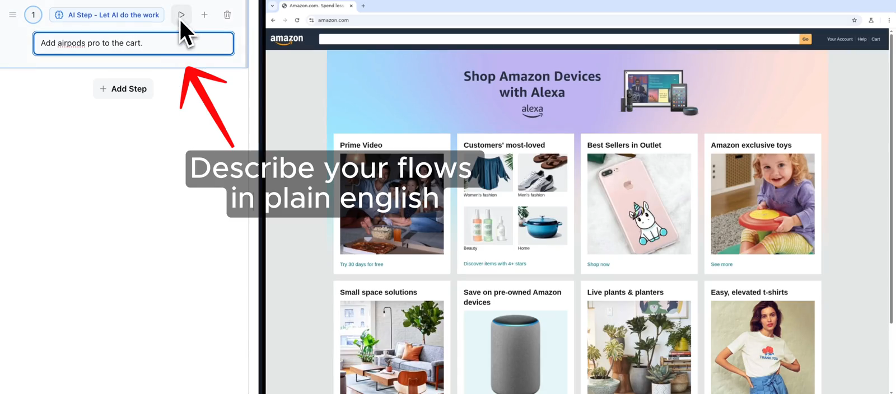
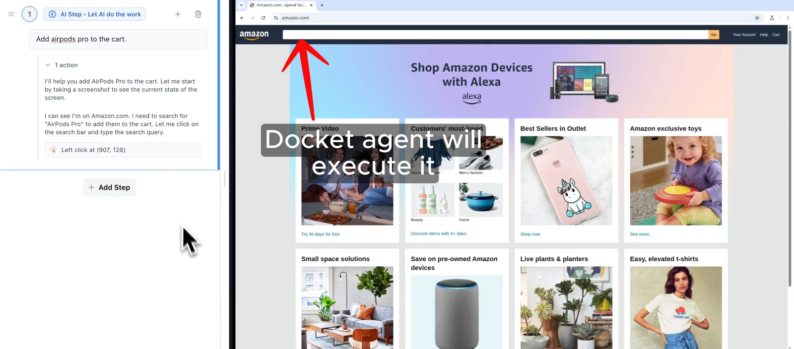
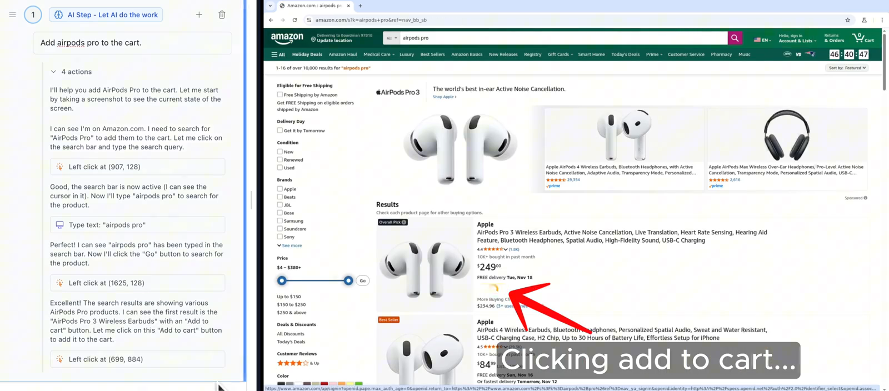
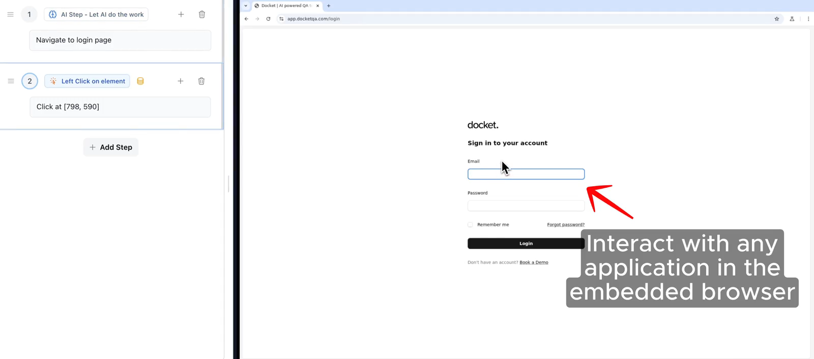
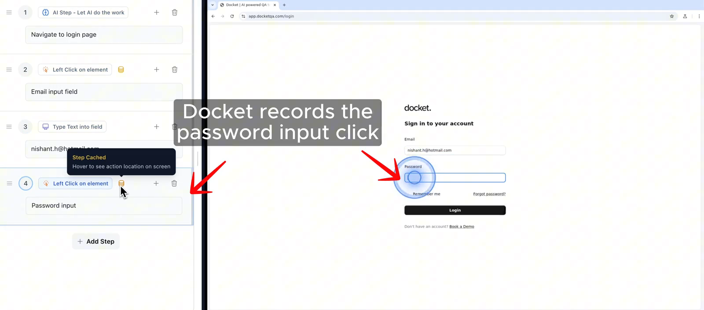
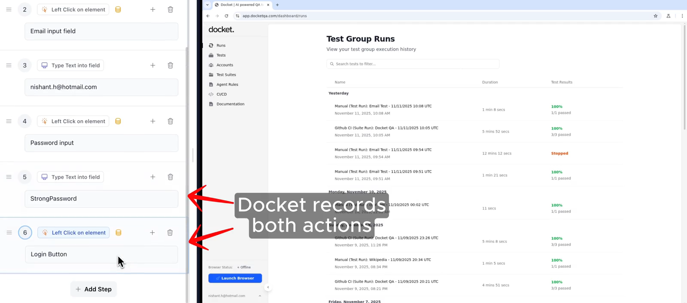
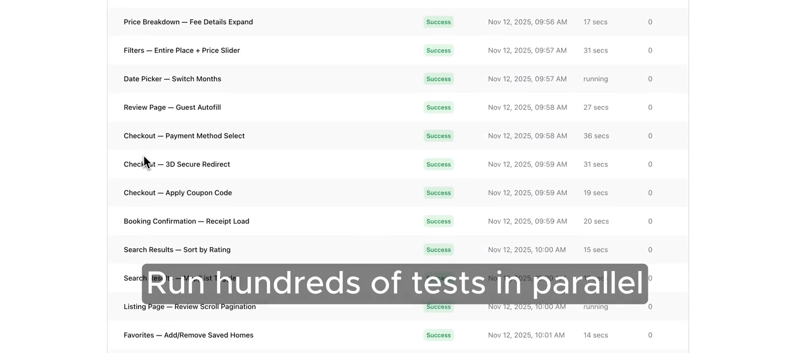
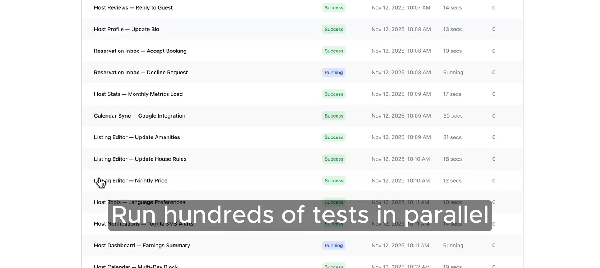
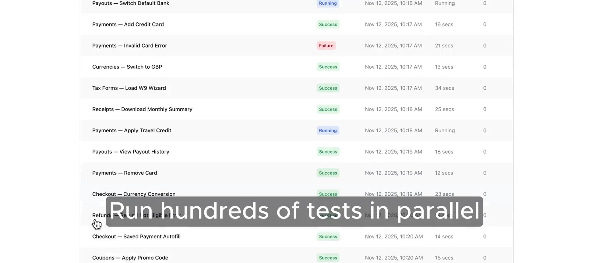

Docket — 機能・導線・画面
確認日：2026年10月27日。比較の見どころ・画面／動画ギャラリー
調査範囲
視覚ベースの記録・再生とAIステップを混在させるWeb／モバイルE2E。
公式動画を収録。現在のアカウント内の全ナビ・スケジュール・設定・モバイル実行は未操作。動画は旧画面を含み得る。
作業の流れ
埋込browser → 操作記録 → ステップ編集／AI指示 → group → 実行 → 結果・retries → repair → 継続
機能の構成
公式動画に左の順序付きステップと右の対象ブラウザ。別画面にTest Group Runs、suite内のテスト状態・時間・Retries。
下表は公開説明・文書の要約。実操作した範囲は画面一覧と調査範囲に限定し、表全体を実機検証済みとはしない。
| 段階 | 画面・機能 | 入力・操作と次の行動 |
|---|---|---|
| 記録 | Embedded browser | 人のクリック・入力をステップとして記録する。 |
| 編集 | Recorded steps | 入力・クリックなどの順序を左パネルで扱い、Add Stepで拡張する。 |
| AI操作 | Natural language step | 動的な箇所を自然言語で指示し、Agentが対象を操作する。 |
| 実行 | Test group・parallel run | まとまったテストを並列で動かす公式例がある。 |
| 結果 | Group runs | 個別の状態、所要時間、再試行回数を一覧で示す。 |
| 保守 | Visual replay・repair | 座標・視覚情報を使う再生と、要素移動への修復を説明。 |
| 継続 | Web／iOS／Android | 複数対象を案内。CI・認証・実行条件の具体設定は要確認。 |
人の担当と比較上の着眼点
記録する正しい経路、AIステップの意図、修復や失敗の妥当性を確認する。
調査者の解釈：記録を土台にAIを部分的に挿す方式。自然言語だけの製品との準備量・保守量の違いを比較する。 製品性能の優劣を実証した結論ではない。
動画と見る場面
- AIステップを入力→ブラウザ操作（14.9秒、official-product-video）。公式の掲載元。
見る場面：
2秒：AI stepの入力、
7秒：検索操作、
12秒：カート追加。 - 埋込ブラウザを操作→記録ステップ作成（17.6秒、official-product-video）。公式の掲載元。
見る場面：
2秒：操作の記録、
8秒：入力stepの蓄積、
15秒：遷移結果。 - スイートの並列実行一覧（12.5秒、official-product-video）。公式の掲載元。
見る場面：
2秒：suite実行一覧、
6秒：状態と時間、
10秒：別のテストgroup。


画面一覧
製品内の画面は未収録。公開説明に基づく機能表と、実際のUIを確認できた範囲を分けている。